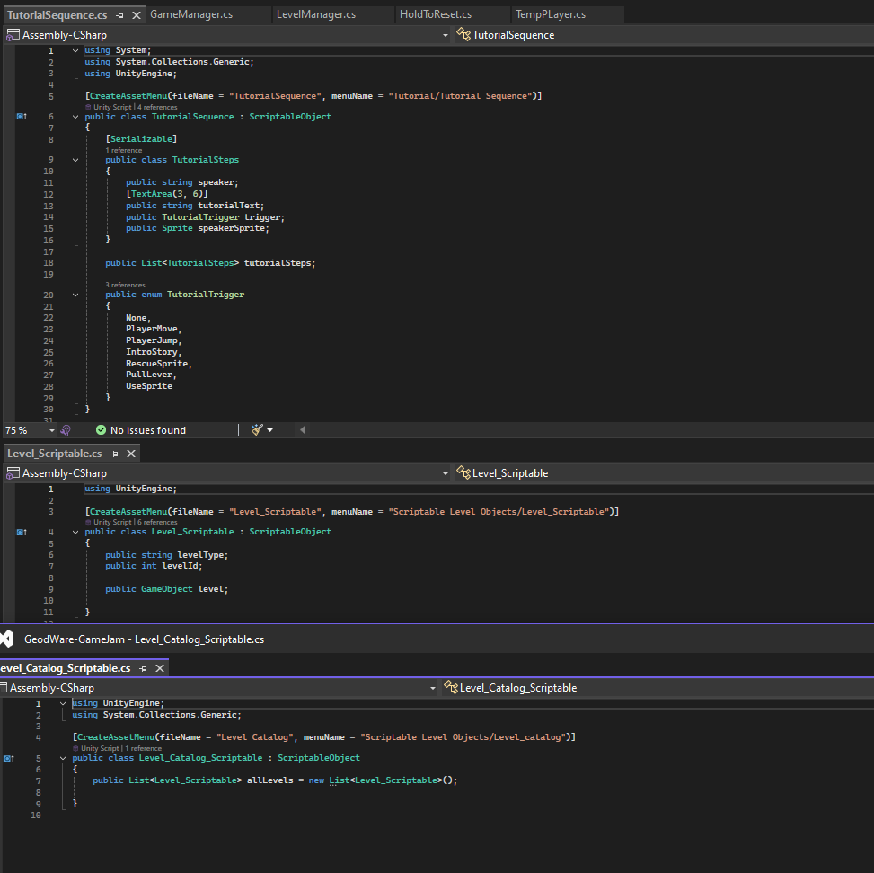

Projects
Randy the naughty wizard
Engine: Unity
Platform: Windows/ WebGL
Language: C#
Role: Programmer/ Game Designer
Summary:
Randy the naughty wizard was created in 10 days for GoedWare Game Jam #16.
Jam Theme 'you can not save them all'
This is a puzzle-platformer built in Unity where your core mechanic is choosing which elemental spirit to save, this choice changes the level you play next.
My biggest achievement in this project was the Modular Level System, I designed and implemented a fully modular level system using Unity ScriptableObjects, allowing levels to be created, configured, and reordered entirely within the editor without code changes.
- Modular Level System: Built a data-driven level pipeline using ScriptableObjects, enabling rapid content creation and reordering without modifying code.
- Branching Progression: Implemented a non-linear level flow system where player choices determine future gameplay paths, increasing replayability.
- Dialogue System: Developed a scalable, ScriptableObject-based dialogue system allowing designers to create and manage dialogue entirely in-editor.
- Editor Workflow Tools: Created designer-friendly systems within the Unity Inspector to streamline iteration during rapid development.
- Systems Integration: Integrated player abilities, puzzle mechanics, and environmental interactions into a cohesive and extensible architecture.
Art:
Credit:

